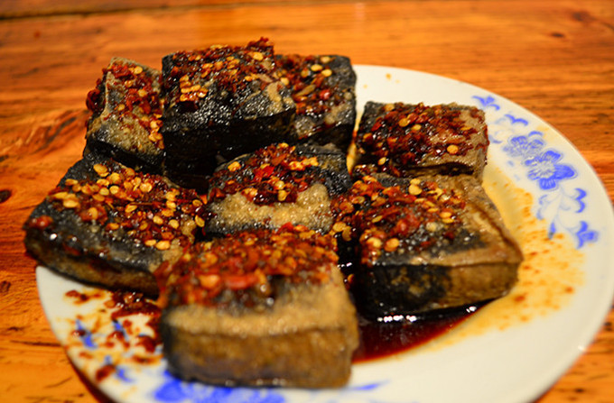
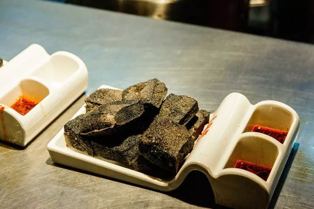
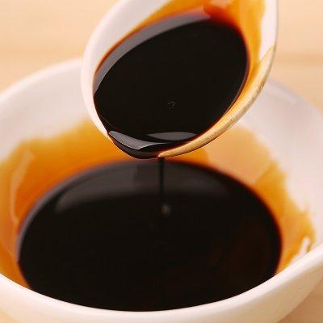
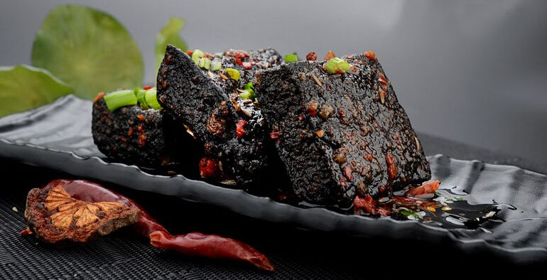

介绍
众人皆知的臭豆腐距今已有近千年的历史
长沙臭豆腐是湖南长沙传统的汉族名吃，长沙当地人又称臭干子
色墨黑，外焦里嫩，鲜而香辣。 焦脆而不糊、细嫩而不腻、初闻臭气扑鼻，细嗅浓香诱人，具有白豆腐的新鲜爽口，油炸豆腐的芳香松脆
不同于其他地方的臭豆腐，从颜色、气味上来比较，长沙的臭豆腐可谓是非常贴合“臭豆腐”三字
黑乎的颜色，初闻怪异的气味，亦臭亦香的特色更是独领风骚

做法
将黄豆用水泡发，泡好后用清水洗净，换入清水20~25kg，用石磨磨成稀糊
再加入与稀糊同样多的温水拌匀，装入布袋内，用力把浆汁挤出
再在豆渣内对入沸水拌匀后再挤，如此连续豆渣不沾手，豆浆已挤完时，撇去泡沫，将浆汁入锅用
大火烧开倒入缸内，加进石膏汁，边加边用木棍搅动，约搅15~20转后，可滴上少许水，如与浆混
合，表示石膏汁不够，须再加进一些石膏汁再搅如所滴入的水没有同浆混合，约过20min后即成为
豆腐脑。将豆腐脑舀入木盒内，盖上木板，压上重石块，压去水分，即成豆腐

以用豆豉2.5kg为标准计算，须加清水15kg烧开，过滤后，在汁水内加碱1500g浸泡半个月左右
，每天搅动1次，发酵后即成卤水

将青矾放入桶内，倒入沸水用棍子搅开，放入豆腐浸泡2h左右，捞出豆腐冷却。然后将豆腐放入
卤水内浸泡，春、秋季约需3~5个h，夏季约浸泡2h左右，冬季约需6~10个h，泡好后取出
用冷开水略洗，沥干水分，再将茶油全部倒入锅内烧红，放入豆腐用小火炸约5min
一待焦黄，即捞出放入盘内，用筷子在豆腐中间钻一个洞，将辣椒油、酱油
麻油倒在一起调匀，放在豆腐洞里即成
